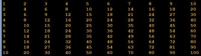

Exercício
Dificuldade
Pontos
Data limite
Créditos
Ficha06_015
Normal
4.0
28/11/2021 00:00:00
(c)M@nso 2021
Multiplication table
Design an algorithm that prints the multiplication table for the numbers between 1 and 10

Input
Output
1 2 3 4 5 6 7 8 9 10 2 4 6 8 10 12 14 16 18 20 3 6 9 12 15 18 21 24 27 30 4 8 12 16 20 24 28 32 36 40 5 10 15 20 25 30 35 40 45 50 6 12 18 24 30 36 42 48 54 60 7 14 21 28 35 42 49 56 63 70 8 16 24 32 40 48 56 64 72 80 9 18 27 36 45 54 63 72 81 90 10 20 30 40 50 60 70 80 90 100
Algorithmi 22.05 Student version (c) Antonio M@nso 2022 Instituto Politécnico de Tomar - All rights reserved